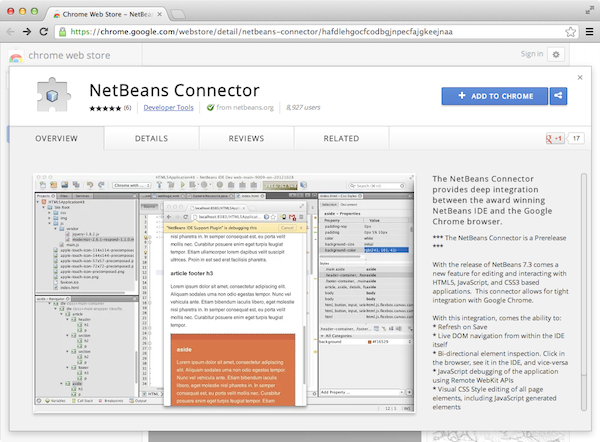
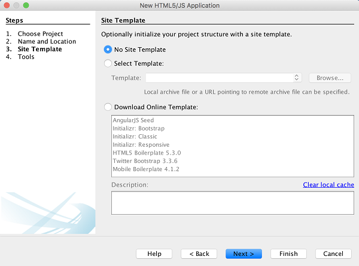
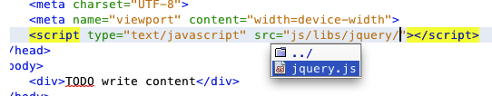
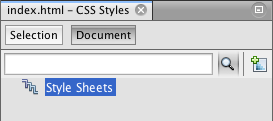
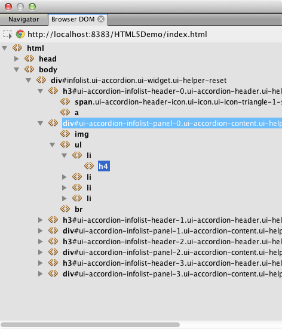

Apache NetBeans
Apache NetBeansLatest release
Начало работы с приложениями HTML5
| This tutorial needs a review. You can open a JIRA issue, or edit it in GitHub following these contribution guidelines. |
В этом документе описывается создание проекта HTML5 в IDE и некоторые функции в IDE, которые поддерживают использование JavaScript и CSS в используемом проекте. В этом документе будет создано простое приложение HTML5, в котором будет использоваться библиотека JQuery JavaScript для изменения списка на веб-странице.
В настоящем документе также демонстрируется способ установки расширения NetBeans Connector для браузера Chrome из веб-магазина Chrome.
Для просмотра экранного рпредставления этого учебного курса см. Видео по началу работы с приложениями HTML5.
Подробнее о том, как использовать JQuery в веб-приложениях Java NetBeans, см. учебный курс Использование jQuery для усовершенствования внешнего вида и удобства веб-страницы.
Для выполнения этого учебного курса потребуются следующие материалы.
| Программное обеспечение или ресурс | Требуемая версия |
|---|---|
7.4, 8.0 |
|
версия 7 или 8 |
|
— |
|
1.0.0 или более поздняя версия |
|
— |
|
— |
Примечания.
-
Файл ресурсов проекта в формате zip содержит изображения в формате JPG и файл CSS, который необходимо добавить к проекту в этом учебном курсе.
-
При сравнении проекта с работающим решением можно загрузить + шаблон сайта+ завершенного проекта.
-
Предполагается, что читатель обладает базовыми знаниями или опытом программирования на HTML, CSS и JavaScript.
Использование IDE с браузером Chrome
Чтобы воспользоваться некоторыми инструментами, доступными в IDE с поддержкой разработки приложений HTML5, рекомендуется использовать браузер Chrome и установить расширение NetBeans Connector веб-магазина Chrome. Расширение нужно устанавливать только один раз.
После установки расширение NetBeans Connector добавляет в меню 'Действия NetBeans', которые доступны из адресной строки URL при запуске проекта NetBeans HTML5 в браузере Chrome. В меню 'Действия NetBeans' можно включить проверку в режиме NetBeans и быстро изменить размер окна браузера в соответствии с размерами распространенных устройств отображения. Отладчик JavaScript также включается автоматически при запуске приложения HTML5.
Установка расширения из веб-магазина Chrome
Будет автоматически отображен запрос на установку расширения NetBeans Connector при запуске проекта приложения NetBeans HTML5 из IDE и выборе Chrome с NetBeans Integration в качестве целевого браузера. Это упражнение демонстрирует, как установить расширение путем создания и запуска фиктивного проекта HTML5. Это упражнение можно пропустить и установить расширение при появлении запроса в IDE или установить расширение NetBeans Connector напрямую из веб-магазина Chrome.
Примечание. IDE откроет веб-магазин Chrome в браузере, заданном по умолчанию. Если Chrome не установлен в качестве браузера по умолчанию для IDE, необходимо открыть окно настроек и выбрать Chrome в раскрывающемся списке 'Веб-браузер' в категории 'Общее', прежде чем выполнить следующие действия.
-
Выберите в меню "Файл" пункт "Новый проект", чтобы открыть мастер создания проекта.
-
Выберите 'Приложение HTML5' в категории HTML/JavaScript. Нажмите кнопку 'Далее'.
-
Задайте имя и местоположение для проекта. Нажмите кнопку 'Далее'.
Для этого упражнения имя не имеет значения.
-
Выберите 'Без шаблона сайта'. Нажмите кнопку 'Готово'.
Когда вы нажмете кнопку 'Готово', IDE создаст новый проект HTML5 и откроет файл index.html в редакторе.
-
Убедитесь, что на панели инструментов в раскрывающимся списке выбран Chrome с NetBeans Integration.
-
Нажмите кнопку 'Выполнить' на панели инструментов.
-
Щелкните 'Перейти к веб-магазину Chrome' в диалоговом окне 'Установить расширение Chrome'.

Figure 1. Диалоговое окно 'Установить расширение Chrome'
При нажатии кнопки 'Перейти к веб-магазину Chrome' страница NetBeans Connector в веб-магазине Chrome откроется в браузере Chrome.
Примечание. В окне 'Установить расширение Chrome' отображается кнопка, после щелчка на которой выполняется установка расширения.

Figure 2. Диалоговое окно 'Установить расширение Chrome'
-
Перейдите к браузеру Chrome и нажмите кнопку 'Добавить в Chrome' на странице NetBeans Connector. Нажмите кнопку 'Добавить' при отображении запроса на подтверждение добавления расширения.

Figure 3. Страница NetBeans Connector в веб-магазине Chrome
Когда расширение установлено, вы увидите уведомление о том, что расширение добавлено, а значок NetBeans Connector будет отображаться в адресной строке URL при запуске проекта NetBeans HTML5 в браузере Chrome.

Figure 4. Подтверждение того, что расширение было установлено
-
В IDE нажмите 'Повторно запустить проект' в диалоговом окне 'Установить расширение Chrome'.
После нажатия 'Повторно запустить проект' в браузере Chrome откроется новая вкладка и отобразится страница индексов приложений HTML5.
После установки расширения вы увидите, что значок NetBeans Connector будет отображаться в адресной строке URL при запуске проекта NetBeans HTML5 в браузере Chrome.
При открытии страницы расширений Chrome ( chrome://extensions/ ) для браузера Chrome вы увидите, что расширение в настоящее время включено.

Figure 5. Расширение NetBeans Connector включено в расширениях Chrome
Примечание. Кроме того, можно установить расширение NetBeans Connector непосредственно из веб-магазина Chrome, выполнив следующие шаги.
-
Запустите браузер Chrome и перейдите в веб-магазин Chrome.
-
Выполните поиск расширения Netbeans Connector в веб-магазине Chrome.
-
Нажмите кнопку 'Добавить к Chrome' на странице результатов поиска и нажмите кнопку 'Добавить' при отображении запроса на добавление расширения.

Figure 6. Расширение NetBeans Connector в веб-магазине Chrome
Автономная установка расширения
Если не удается подключиться к веб-магазину Chrome, можно установить расширение NetBeans Connector, который входит в комплект с IDE. Если при запуске проекта NetBeans HTML5 будет предложено установить расширение NetBeans Connector, вы можете выполнить следующие действия, чтобы установить расширение при отсутствии доступа к веб-магазину Chrome.
-
Щелкните 'Отсутствует подключение' в диалоговом окне 'Установить расширение Chrome'.
Figure 7. Диалоговое окно 'Установить расширение Chrome'
-
Щелкните найти в диалоговом окне, чтобы открыть папку установки IDE NetBeans в локальной системе, содержащей расширение *
netbeans-chrome-connector.crx*.

Figure 8. Расширение NetBeans Connector включено в расширениях Chrome
-
Откройте страницу расширений Chrome (
chrome://extensions/) в браузере Chrome.

Figure 9. Расширение NetBeans Connector включено в расширениях Chrome
-
Перетащите расширение
netbeans-chrome-connector.crxна страницу 'Расширения' в браузере и нажмите кнопку 'Добавить', чтобы подтвердить добавление расширения.
После добавления расширения вы увидите, что расширение NetBeans Connector добавлено в список установленных расширений.
-
Щелкните Да, подключаемый модуль сейчас установлен в диалоговом окне 'Установить расширение Chrome', чтобы открыть проект NetBeans HTML5 в браузере Chrome. Вы увидите значок NetBeans Connector в адресной строке вкладки браузера.
Использование встроенного браузера на базе WebKit
Рекомендуется запускать приложения HTML5 в браузере Chrome с установленным расширением NetBeans Connector при разработке приложений. Параметр Chrome с интеграцией NetBeans выделяется по умолчанию при запуске целевого элемента при создании в приложении HTML5. Тем не менее, также возможен запуск приложений HTML5 во встроенном браузере на базе WebKit, который входит в комплект с IDE.
При запуске приложения HTML5 во встроенном браузере на базе WebKit в IDE открывается окно веб-браузера. Встроенный браузер на базе WebKit поддерживает многие функции, которые включены в браузере Chrome, при условии установки расширения NetBeans Connector, в том числе режим проверки, выбор различных вариантов размера экрана и отладка JavaScript.
Примечание. При выборе 'Окно' > 'Интернет' > 'Веб-браузер' в главном меню IDE открывает браузер, который указан в качестве веб-браузера в окне 'Параметры'.
Выполните следующие действия, чтобы запустить приложение HTML5 application во встроенном браузере на базе WebKit.
-
Выберите встроенный браузер на базе WebKit в раскрывающемся списке на панели инструментов.

Figure 10. Список целевых браузеров для приложений HTML5 в раскрывающемся списке на панели инструментов
-
Нажмите 'Выполнить' на панели инструментов или щелкните правой кнопкой мыши узел проекта в окне 'Проекты' и выберите 'Выполнить'.
При запуске приложения окно веб-браузера открывается в IDE.

Figure 11. Окно встроенного браузера на базе WebKit
Можно щелкнуть значки на панели инструментов вкладки веб-браузера, чтобы включить режим проверки и быстро переключаться между различными размерами экрана.
Создание проекта HTML5 NetBeans
В этом упражнении мы используем мастер создания проектов в IDE, чтобы создать новый проект HTML5. В этом учебном курсе создается очень простой проект HTML5, который имеет только файл index.html . В мастере также будут выбраны некоторые библиотеки JQuery JavaScript, которые будут использоваться в проекте.
-
Выберите 'Файл' > 'Новый проект' (Ctrl-Shift-N; ⌘-Shift-N в Mac) в главном меню, чтобы открыть мастер создания проектов.
-
Выберите категорию HTML5, затем выберите Приложение HTML5. Нажмите кнопку 'Далее'.

Figure 12. Шаблон приложения HTML5 в мастере создания проектов
-
Введите HTML5Demo в качестве имени проекта и укажите каталог на компьютере, где следует сохранить проект. Нажмите кнопку 'Далее'.
-
В шаге 3. Шаблон сайта, выберите 'Без шаблона сайта'. Нажмите кнопку 'Далее'.

Figure 13. Панель шаблонов сайта в мастере создания приложений HTML5
При выборе 'Без шаблона сайта' мастер создает базовый пустой проект NetBeans HTML5. Если нажать кнопку 'Готово', проект будет содержать только папку корня сайта и файл index.html в папке корня сайта.
Страница шаблона сайта мастера позволяет выбрать необходимое из списка популярных интерактивных шаблонов для проектов HTML5 или указать местоположение архива .zip шаблона сайта. Можно ввести адрес URL архива .zip или щелкнуть 'Обзор', чтобы указать местоположение в локальной системе. Когда вы создаете проект на основе шаблона сайта, файлы, библиотеки и структура проекта определяется шаблоном.
Примечание. Вы должны быть подключены к сети, чтобы создать проект, который основан на одном из интернет-шаблонов в списке.
-
В шаге 4. Файлы JavaScript - выберите библиотеки JavaScript
jqueryиjqueryguiна панели 'Доступные' и щелкните значок со стрелкой вправо ( > ), чтобы переместить выбранные библиотеки на панель мастера 'Выбранное'. По умолчанию библиотеки создаются в папке проектаjs/libraries. В этом учебном курсе будут использоваться "уменьшенные" версии библиотек JavaScript.
Можно использовать текстовое поле на панели, чтобы отфильтровать список библиотек JavaScript. Например, введите jq в поле, чтобы найти библиотеки jquery . Вы можете удерживать нажатой клавишу Ctrl и щелкнуть левой кнопкой мыши имена библиотек для выбора нескольких библиотек.

Figure 14. Панель 'Библиотеки JavaScript' в мастере создания приложений HTML5
Примечания.
-
Можно нажать номер версии библиотеки в столбце 'Версия', чтобы открыть всплывающее окно, в котором можно выбрать предыдущие версии библиотек. По умолчанию в мастере отображается самая последняя версия.
-
Минимизированные версии библиотек JavaScript - это сжатые версии, и при просмотре в редакторе код не является доступным для понимания.
-
Для завершения мастера нажмите кнопку Готово.
После нажатия кнопки 'Готово' в IDE создается проект, отображается узел проекта в окне 'Проекты' и открывается файл index.html в редакторе.

Figure 15. Панель 'Библиотеки JavaScript' в мастере создания приложений HTML5
Если развернуть папку js/libs в окне 'Проекты', будет видно, что библиотеки JavaScript, которые были указаны в мастере создания проектов, были автоматически добавлены к проекту. Можно удалить библиотеку JavaScript из проекта, щелкнув правой кнопкой мыши файл JavaScript и выбрав 'Удалить' во всплывающем меню.
Чтобы добавить библиотеку JavaScript к проекту, щелкните правой кнопкой мыши узел проекта и выберите 'Свойства', чтобы открыть окно 'Свойства проекта'. Можно добавлять библиотеки к панели 'Библиотеки JavaScript' в окне 'Cвойства проекта'. Кроме того, можно скопировать файл JavaScript, который находится в локальной системе, напрямую в папку js .
Теперь можно проверить, правильно ли отображается данный проект в браузере Chrome.
-
Убедитесь, что на панели инструментов браузера в раскрывающимся списке выбран Chrome с NetBeans Integration.

Figure 16. Браузер, выбранный в раскрывающемся списке на панели инструментов.
-
Щелкните правой кнопкой мыши узел проекта в окне "Проекты" и выберите "Выполнить".
При выборе 'Выполнить в IDE' открывается вкладка в браузере Chrome и отображается страница index.html по умолчанию для приложения. В среде IDE открывается окно 'Обзор DOM', в котором отображается дерево DOM открытой в браузере страницы.

Figure 17. Приложение на вкладке браузера Chrome
Обратите внимание, что на вкладке браузера имеется желтая полоса, которая является уведомлением о том, NetBeans Connector выполняет отладку вкладки. IDE и браузер связаны и имеют возможность взаимодействовать друг с другом в тех случаях, когда желтая полоса видна. При запуске приложения HTML5 из IDE отладчик JavaScript включается автоматически. После сохранения изменений в файле или внесении изменений в таблицу стилей CSS не нужно перезагружать страницу, потому что окно браузера автоматически обновляется с учетом изменений.
При закрытии желтой полосы или щелчка 'Отмена' разрывается соединение между IDE и браузером. В случае разрыва соединения необходимо запустить приложение HTML5 из IDE повторно.
Также следует отметить, что значок NetBeans отображается в местоположении адреса URL поля браузера. Вы можете щелкнуть значок, чтобы открыть меню, которое предоставляет различные варианты для изменения размера изображения в браузере и для включения режима проверки в режиме NetBeans.

Figure 18. Меню NetBeans на вкладке браузера Chrome
Если выбрать одно из заданных по умолчанию устройств в меню, размер окна браузера будет изменяться в соответствии с размерами выбранного устройства. Это позволит увидеть, как приложение будет выглядеть на выбранном устройстве. Приложения HTML5 обычно реагируют на размер экрана устройства, на котором они просматриваются. Можно использовать правила JavaScript и CSS, которые реагируют на размер экрана, а также изменить способ отображения приложения таким образом, чтобы его макет был оптимизирован для устройства.
Редактирование файла HTML
В этом упражнении будут добавлены ресурсы проекта к проекту и будет выполнено редактирование файла index.html для добавления ссылок на ресурсы и некоторых правил CSS. Вы увидите, как несколько простых средств выбора CSS в сочетании с JavaScript могут значительно изменить то, как страница отображается в браузере.
-
Загрузите архив ресурсы проекта и извлеките содержимое.
ZIP-архив содержит две папки с файлами, которые нужно добавить к проекту: pix и css .
-
Скопируйте папки
pixиcssв корневую папку сайта.
Примечание. Если проанализировать структуру каталогов проекта, необходимо скопировать папки в папку public_html .

Figure 19. Меню NetBeans на вкладке браузера Chrome
-
Откройте в редакторе
index.html(если он еще не открыт).
-
В редакторе добавьте ссылки на библиотеки JavaScript, которые были добавлены при создании проекта, добавив следующий код (выделен полужирным шрифтом) между открывающим и закрывающим тегами
<head>.
<html>
<head>
<title></title>
<meta charset=UTF-8">
<meta name="viewport" content="width=device-width">
*<script type="text/javascript" src="js/libs/jquery/jquery.js"></script>
<script type="text/javascript" src="js/libs/jqueryui/jquery-ui.js"></script>*
</head>
<body>
TODO write content
</body>
</html>Для решения задач можно использовать функцию автозавершения кода в редакторе.

Figure 20. Автозавершение кода в редакторе
-
Удалите заданный по умолчанию комментарий ‘TODO write content’ и введите следующий код между тегами
body.
<body>
<div>
<h3><a href="#">Mary Adams</a></h3>
<div>
<img src="pix/maryadams.jpg" alt="Mary Adams">
<ul>
<li><h4>Vice President</h4></li>
<li><b>phone:</b> x8234</li>
<li><b>office:</b> 102 Bldg 1</li>
<li><b>email:</b> m.adams@company.com</li>
</ul>
<br clear="all">
</div>
<h3><a href="#">John Matthews</a></h3>
<div>
<img src="pix/johnmatthews.jpg" alt="John Matthews">
<ul>
<li><h4>Middle Manager</h4></li>
<li><b>phone:</b> x3082</li>
<li><b>office:</b> 307 Bldg 1</li>
<li><b>email:</b> j.matthews@company.com</li>
</ul>
<br clear="all">
</div>
<h3><a href="#">Sam Jackson</a></h3>
<div>
<img src="pix/samjackson.jpg" alt="Sam Jackson">
<ul>
<li><h4>Deputy Assistant</h4></li>
<li><b>phone:</b> x3494</li>
<li><b>office:</b> 457 Bldg 2</li>
<li><b>email:</b> s.jackson@company.com</li>
</ul>
<br clear="all">
</div>
<h3><a href="#">Jennifer Brooks</a></h3>
<div>
<img src="pix/jeniferapplethwaite.jpg" alt="Jenifer Applethwaite">
<ul>
<li><h4>Senior Technician</h4></li>
<li><b>phone:</b> x9430</li>
<li><b>office:</b> 327 Bldg 2</li>
<li><b>email:</b> j.brooks@company.com</li>
</ul>
<br clear="all">
</div>
</div>
</body>-
Сохраните изменения.
При сохранении изменений страница автоматически перезагружается в браузере и должна выглядеть примерно так, как показано ниже.

Figure 21. Перезагруженная страница на вкладке браузера Chrome
-
Введите следующие встроенные правила CSS между тегами
<head>в файле.
<style type="text/css">
ul {list-style-type: none}
img {
margin-right: 20px;
float:left;
border: 1px solid;
}
</style>Нажмите сочетание клавиш Ctrl-Space, чтобы использовать функцию автозавершения кода в редакторе при добавлении правил CSS.

Figure 22. Автозавершение кода правил CSS в редакторе
Если открыть окно 'Обзор DOM', отображается текущая структура страницы.

Figure 23. Окно 'Обзор DOM' с деревом DOM
-
Добавьте следующую ссылку к странице стилей (выделена полужирным шрифтом) между тегами
<head>.
<head>
...
<script type="text/javascript" src="js/libs/jqueryui/jquery-ui.js"></script>
*<link type="text/css" rel="stylesheet" href="css/basecss.css">*
...
</head>Страница стилей basecss.css основана на определенных правилах CSS, определенных на страницах стилей CSS, в теме "UI lightness" jQuery.
Можно открыть страницу стилей basecss.css в редакторе и изменить страницу стилей для добавления правил CSS, добавленных в предыдущем шаге, или создать новую страницу стиля для правил CSS.
-
Добавьте следующий код между тегами
<head>для запуска сценария jQuery при загрузке элементов страницы.
*<script type="text/javascript">
$(document).ready(function() {
});
</script>*
</head>jQuery работает путем подключения динамически примененных атрибутов и поведений JavaScript к элементам модели DOM (объектной модели документа). Команды jQuery, которые будет использоваться в этом примере, должны быть выполнены только после загрузки браузером всех элементов модели DOM. Это важно, потому что поведения jQuery подключаются к элементам модели DOM, и эти элементы должны быть доступны для jQuery для получения ожидаемых результатов. jQuery выполняет это за нас с помощью встроенной функции (document).ready, которая следует за объектом jQuery, представленным $.
Также можно использовать следующую сокращенную версию этой функции.
$(function(){
});Команды для jQuery принимают форму метода JavaScript с дополнительным объектным литералом, предоставляющим массив параметров, который должен быть помещен между фигурными скобками {} в функции (document).ready для выполнения только в допустимый момент, то есть после полной загрузки модели DOM.
-
Введите следующий код (выделен полужирным шрифтом) внутри функции
(document).ready, между скобок{}.
<script type="text/javascript">
$(document).ready(function() {
*$("#infolist").accordion({
autoHeight: false
});*
});
</script>
</head>Этот код вызовет сценарий jQuery accordion widget, включенный в библиотеку пользовательского интерфейса jQuery. Сценарий accordion изменит элементы в объекте DOM, идентифицированном как infolist . В этом коде #infolist — это селектор CSS, подключенный к уникальному элементу DOM, имеющему атрибут id со значением infolist. С помощью обычной точечной нотации JavaScript (‘.’) он подключается к инструкции jQuery, использующей метод accordion() для отображения этого элемента.
В следующем шаге будет выполнена идентификация элемента на странице как infolist .
Примечание. В приведенном выше фрагменте кода также было указано ‘autoHeight: false’. Это препятствует установке элементом оформления accordion высоты каждой панели на основе самой высокой части содержимого в разметке. Дополнительные сведения см. в документации accordion API.
Раздел <head> файла index.html должен выглядеть следующим образом.
<html>
<head>
<title></title>
<meta charset="UTF-8">
<meta name="viewport" content="width=device-width">
<script type="text/javascript" src="js/libs/jquery/jquery.js"></script>
<script type="text/javascript" src="js/libs/jqueryui/jquery-ui.js"></script>
<link type="text/css" rel="stylesheet" href="css/basecss.css">
<style type="text/css">
ul {list-style-type: none}
img {
margin-right: 20px;
float:left;
border: 1px solid;
}
</style>
<script type="text/javascript">
$(document).ready(function() {
$("#infolist").accordion({
autoHeight: false
});
});
</script>
</head>Код можно упорядочить, щелкнув правой кнопкой мыши в редакторе и выбрав 'Формат'.
-
Измените элемент
<div>, заключающий содержимое страницы. путем добавления следующего средства выбора и значенияid(выделено полужирным шрифтом).
<body>
<div *id="infolist"*>Этот элемент <div> заключает содержимое страницы (четыре набора тегов <h3> и тегов <div>, добавленных ранее в этом учебном курсе).
Можно добавить средство выбора к элементу в диалоговом окне 'Изменить правила CSS'. Чтобы открыть диалоговое окно "Изменить правила CSS", щелкните правой кнопкой мыши тег <div> в редакторе и выберите пункт меню "Изменить правила CSS". Также можно поместить курсор вставки в тег <div> в редакторе и нажать кнопку "Изменить правила CSS" ( ) в окне "Cтили CSS" (Окно > Веб > Стили CSS).
) в окне "Cтили CSS" (Окно > Веб > Стили CSS).

Figure 24. Окно 'Стили CSS'
В диалоговом окне 'Правила CSS' выберите id как 'Тип средства выбора' и введите infolist как 'Средство выбора'. Убедитесь, что установлен флажок 'Применить изменения к элементу'.

Figure 25. Диалоговое окно 'Изменение правил CSS'
При нажатии кнопки ОК в диалоговом окне правило CSS для средства выбора infolist автоматически добавляется к таблице стилей basecss.css .
-
Сохраните внесенные изменения в
index.html(Ctrl-S; ⌘-S в Mac).
При сохранении изменений страница автоматически перезагружается в веб-браузере. Отображается, что макет страницы был изменен и что на странице теперь используются правила стилей CSS, которые определены в таблице стилей basecss.css . Один из снимков ниже <h3> открыт, но другие свернуты. Чтобы развернуть список, можно щелкнуть элемент <h3> .

Figure 26. Окончательный проект будет загружен в браузер
Функция jQuery Accordion теперь изменяет все элементы страницы, которые содержатся в объекте DOM infolist . В окне "Навигатор" видна структура файла HTML с элементом div , определенным как id=infolist .

Figure 27. Окно 'Обзор DOM'
Можно щелкнуть правой кнопкой мыши элемент в окне 'Навигатор' и выбрать 'Перейти к источнику' для быстрого перехода к местоположению этого элемента в файле исходного кода.
В окне "Обозреватель DOM" видны элементы DOM страницы, открытой в браузере, и стили JQuery, примененные к этим элементам.

Figure 28. Окно 'Обзор DOM'
Если в браузере включен параметр "Проверка в режиме NetBeans", элементы, выбранные в окне браузера, подсвечиваются в окне "Обозреватель DOM".
Сохранение проекта как шаблона сайта
Можно сохранить проект в виде шаблона сайта, который можно использовать в качестве шаблона для создания других сайтов HTML5, которые основаны на проекте. Шаблон сайта может включать в себя библиотеки JavaScript, файлы CSS, изображения и шаблоны для HTML файлов. IDE предоставляет мастеру вспомогательные средства, позволяющие выбрать файлы, которые необходимо включить в шаблон сайта.
-
Правой кнопкой мыши щелкните проект в окне 'Проекты' и выберите 'Сохранить как шаблон' во всплывающем меню.
-
Введите HTML5DemoSiteTemplate в поле 'Имя' и укажите местоположение сохранения шаблона.
-
Убедитесь, что выбраны все файлы. Нажмите кнопку 'Готово'.
Если развернуть узлы дерева в диалоговом окне, можно просмотреть файлы, которые будут включены в шаблон сайта.

Figure 29. Диалоговое окно 'Создать шаблон сайта'
Отображается, что шаблон сайта будет включать файл index.html , таблицу стилей CSS и изображения, используемые в проекте, а также наличие библиотек JavaScript. Шаблон сайта может также включать любые файлы конфигурации и тесты.
При нажатии на кнопку "Готово" IDE создает шаблон сайта в виде архива .zip .
Если необходимо создать проект, основанный на шаблоне сайта, укажите местоположение архива .zip на панели 'Шаблон сайта' мастера создания проектов.
Заключение
В этом учебном курсе вы узнали, как создавать пустой проект HTML5, в котором используется пара библиотек jQuery JavaScript. Вы также узнали, как создавать расширение NetBeans Connector для браузера Chrome и запускать проект HTML5 в браузере. При изменении файла index.html отображается, что IDE предоставляет определенные средства, которые можно использовать для редактирования файлов HTML и CSS.
См. также
Подробнее о поддержке приложений HTML5 в IDE см. в следующих материалах на сайте www.netbeans.org:
-
Работа со страницами стилей CSS в приложениях HTML5 Документ, который продолжает работу с приложением, которое было создано в этом учебном курсе. Он показывает, как использовать некоторые из мастеров CSS и окон в IDE и как использовать режим проверки в браузере Chrome для визуального определения элементов в источниках проекта.
-
Отладка и тестирование JavaScript в приложениях HTML5 Документ, который демонстрирует, как IDE предоставляет инструменты, которые могут использоваться в отладке и тестировании файлов сценариев JAVA в IDE.
Дополнительные сведения о jQuery доступны в официальной документации:
-
Официальная домашняя страница: http://jquery.com
-
Домашняя страница UI: http://jqueryui.com/
-
Учебные курсы: http://docs.jquery.com/Tutorials
-
Главная страница документации: http://docs.jquery.com/Main_Page
-
Демонстрации интерфейса пользователя и документация: http://jqueryui.com/demos/